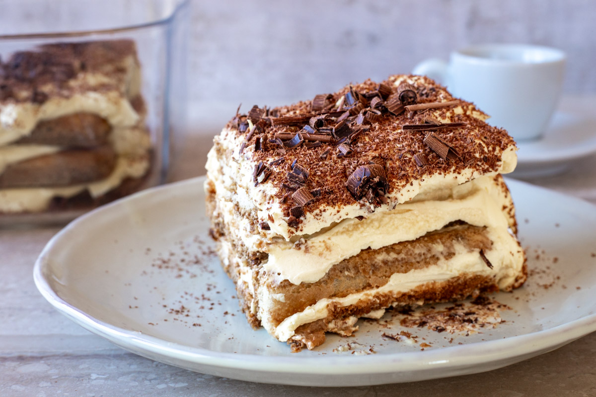

Tiramisu
Tiramisu is a beloved Italian dessert known for its delicate layers of espresso-soaked ladyfingers and a
rich, creamy mascarpone filling. This no-bake classic is both elegant and indulgent—perfect for special
occasions or a luxurious treat.
Preparation:
25–30 minutes active prep
Chill:
4–6 hours (or overnight)
Total:
About 30 minutes (plus chilling)
Ingredients:
- 6 egg yolks
- 3/4 cup (150g) granulated sugar
- 1 cup (240ml) heavy cream
- 1 pound (450g) mascarpone cheese, softened
- 2 cups (480ml) strong brewed espresso or coffee, cooled
- 1/4 cup (60ml) coffee liqueur (optional)
- 1 package ladyfinger biscuits (Savoiardi)
- Unsweetened cocoa powder, for dusting
- Dark chocolate shavings (optional)
Instructions:
- In a heatproof bowl over a pot of simmering water (double boiler), whisk together egg yolks and
sugar until pale and thickened (about 8–10 minutes). Remove from heat and let cool slightly.
- In a separate bowl, whip the heavy cream to stiff peaks.
- In another bowl, beat the mascarpone until smooth. Gently fold the whipped cream into the
mascarpone, then fold in the cooled egg yolk mixture until fully combined and creamy.
- In a shallow dish, combine the espresso and coffee liqueur (if using).
- Quickly dip each ladyfinger into the coffee mixture (do not soak), and arrange in a single layer in
a 9x13-inch dish or similar.
- Spread half of the mascarpone mixture over the ladyfingers. Repeat with another layer of dipped
ladyfingers and the remaining mascarpone cream.
- Cover and refrigerate for at least 4–6 hours, preferably overnight, to allow flavors to meld.
- Before serving, dust generously with cocoa powder and garnish with chocolate shavings if desired.